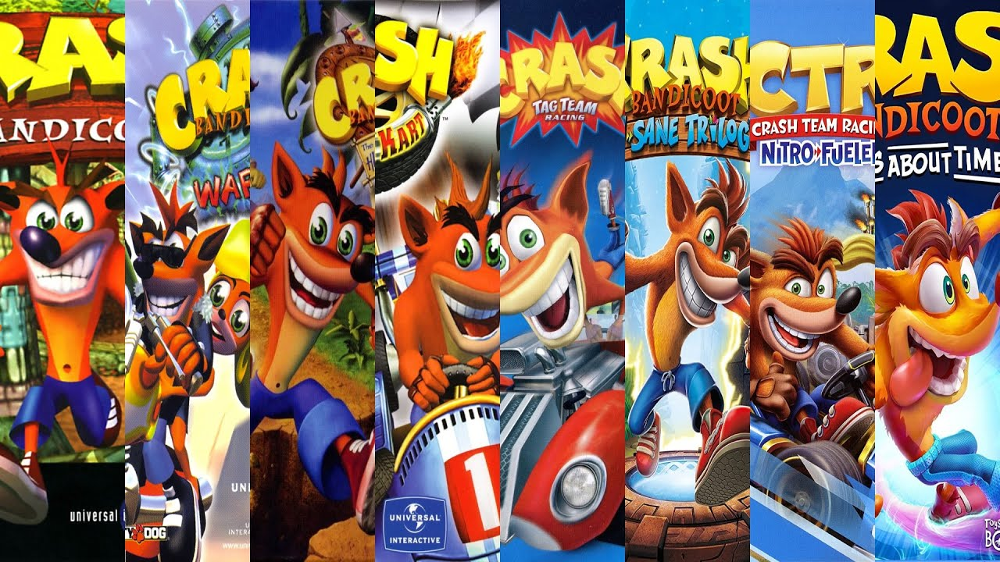

Objetivo: Desafiar tudo de mais difícil que a franquia tem a oferecer
Olá, meu nome é Victor! Há mais de 20 anos, desde quando eu era criança, eu conheço e jogo essa franquia que tanto amo chamada Crash Bandicoot. Ela é, sem dúvidas, a minha franquia favorita, e talvez a maior responsável por eu gostar tanto do gênero plataforma como eu gosto hoje.
Mas porque eu gosto tanto de Crash? Bem, não apenas por eu gostar muito dos jogos em si, visto que todos (quase todos) são excelentes, mas também pelos desafios proporcionados por eles, já que eu sou um jogador que adora desafios difíceis. Esses desafios, em sua maioria, são desafios de tempo chamados "Time Trial", que são desafios que consistem em realizar o percurso da fase da forma mais rápida possível, com diversos tempos-alvo determinados pelo jogo para desafiar o jogador.
Dentre os desafios, temos os mais simples como as relíquias de safira e de ouro, até mais complexos como as relíquias de platina! E para os jogadores extremamente avançados e experientes, em alguns jogos até temos tempos de desenvolvedor ("Developer Times"), que necessitarão do máximo do jogador para serem concluídos.
E este é o meu objetivo por aqui! Desafiar e derrotar todos os desafios mais difíceis que esta maravilhosa franquia tem para nos apresentar, indo de jogo em jogo, vencendo cada um deles, e mostrando e documentando aqui como eu fiz, o quão difícil foi, e como eu recomendaria alguém a fazé-los.
É importante ressaltar que nem todos os desafios se tratarão de relíquias, e também alguns não serão desafios de tempo. Dessa forma, tentarei cobrir por aqui todo tipo de desafio que valha a pena estar incluído, de todos os jogos que lançaram para a franquia até então, e todos que ainda irão sair (espero que saia hahaha). Assim, tentarei fazer algo da forma mais completa possível, dando o melhor tratamento, que é o que esta incrível franquia merece!